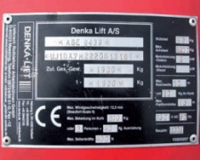
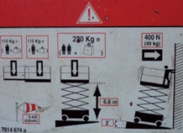
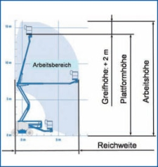
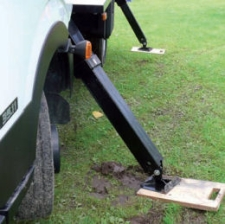
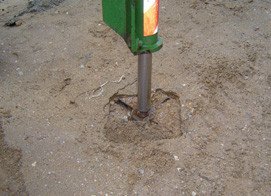
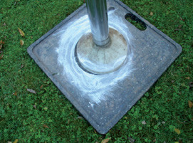
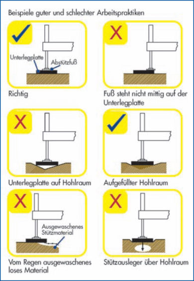
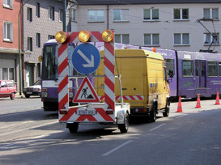
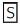
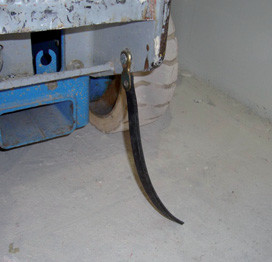

Informationen zum sicheren Umgang mit fahrbaren Hubarbeitsbühnen gehen bereits aus der Kennzeichnung und der Betriebsanleitung hervor. Daneben gibt die Gefährdungsbeurteilung wesentliche Hinweise für die Auswahl der richtigen Hubarbeitsbühne, auch unter Berücksichtigung der örtlichen Gegebenheiten, wie Untergrund und Verkehrsweg.
Fahrbare Hubarbeitsbühnen sind mit allen erforderlichen Angaben dauerhaft und gut sichtbar gekennzeichnet, die für ihre bestimmungsgemäße Verwendung notwendig sind.
Jede fahrbare Hubarbeitsbühne trägt ein Fabrikschild mit allen wichtigen Angaben (Bild 4-1).

Für spezielle Einsatzbereiche ist das Eigengewicht der Hubarbeitsbühne entscheidend (z. B. Einsatz auf Decken, über Schächten usw.), welches daher auf dem Fabrikschild angegeben ist. Dabei ist auf die jeweiligen Radlasten/Stützlasten zu achten.
Für die Bedienperson selbst ist die Tragfähigkeit von besonderer Bedeutung. Diese Nennlast (maximale Belastung im Arbeitskorb) wird auf dem Betriebsschild angegeben. Sie ist unterteilt in die maximal zulässige Personenzahl und die Zuladung für Ausrüstungen, wie Werkzeuge und Arbeitsmaterial.
Eine Überschreitung der Personenzahl oder der Zuladung kann zu einer Überbelastung der Hubarbeitsbühne und Einschränkung der Standsicherheit führen.
Des Weiteren ist die höchstzulässige Windgeschwindigkeit in m/s für Hubarbeitsbühnen, die für den Einsatz im Freien zugelassen sind, angegeben. Wird die höchstzulässige Windgeschwindigkeit von 12,5 m/s (Windstärke 6) überschritten, ist der Betrieb einzustellen. Außerdem dürfte unter der entsprechenden Windbelastung ein Arbeiten in angehobener Position durch die Schwankungen der Arbeitsbühne unmöglich sein. Mit einem Windmesser kann die Windgeschwindigkeit in Höhe des Arbeitskorbes genau bestimmt werden.
Darüber hinaus gibt das Fabrikschild Auskunft über die maximal zulässige Handkraft. Durch das Arbeiten vom Arbeitskorb aus werden Handkräfte auf Teile der Umgebung übertragen. Diese Kräfte wirken auf die Hubarbeitsbühne zurück. Eine Überschreitung des zulässigen Wertes gefährdet die Standsicherheit. Der angegebene Wert gilt als Gesamtwert aller auf der Arbeitsbühne tätigen Personen.
Für den Einsatz an unter Spannung stehenden elektrischen Systemen oder Anlagen muss die fahrbare Hubarbeitsbühne isoliert sein. Sollte dies der Fall sein, ist auf dem Fabrikschild und natürlich in der Betriebsanleitung ein entsprechender Hinweis zu finden. Ohne diese Isolierung ist ein Arbeiten an unter Spannung stehenden elektrischen Systemen bzw. Anlagen untersagt.
Folgende Angaben müssen an fahrbaren Hubarbeitsbühnen auf einem oder mehreren dauerhaft angebrachten Fabrikschildern unauslöschlich und gut sichtbar sein:

Der Hersteller stellt ein Betriebshandbuch zur Verfügung, in dem er Auskünfte über die Ausrüstung der Hubarbeitsbühne und deren Sicherheitseinrichtungen gibt. Hier werden ebenfalls Festlegungen getroffen, die ein sicheres und bestimmungsgemäßes Verwenden ermöglichen.
Das Betriebshandbuch informiert z. B. über
Die Hersteller haben Sicherheitseinrichtungen, z. B. Lastmomentbegrenzer, eingebaut, die ein Umkippen der Bühne verhindern sollen. Das Risiko eines Umsturzes kann jedoch nicht völlig ausgeschlossen werden, wenn sich die Benutzer nicht streng an die Vorgaben des Herstellers halten.
Um die Gefährdung "Umkippen" weitestgehend auszuschließen, sollte Folgendes beachtet werden:
Für den Bediener sind nachfolgende Informationen zu einzelnen Krafteinwirkungen beim Betrieb von Hubarbeitsbühnen von Bedeutung, um ungewolltes Umkippen zu verhindern.
Die Nennlast setzt sich zusammen aus der Last der zugelassenen Personen im Arbeitskorb und der Last aus Werkzeug und Material.
Hieraus ergeben sich für den Bediener folgende Hinweise:
Handkräfte entstehen durch Montagetätigkeiten, die vom Hersteller in der Standsicherheitsberechnung nach DIN EN 280 berücksichtigt wurden.
Hinweise für den Bediener:
Die Gefährdungsbeurteilung, als zentrale Informationsquelle für die mit der Arbeit verbundenen Gefährdungen und den daraus abzuleitenden Maßnahmen (siehe Abschnitt 6), bezieht auch die Auswahl der zum Einsatz kommenden Hubarbeitsbühne ein (siehe Anhang 5).
Vor dem Einsatz bzw. vor der Anmietung ist von der verantwortlichen Person zu klären, welche Tätigkeiten ausgeführt werden sollen. Die Reichweite des Arbeitskorbes der Hubarbeitsbühne muss zu den auszuführenden Tätigkeiten und zur örtlichen Gegebenheit passen. Zu berücksichtigen ist, dass der Unterschied zwischen Plattformhöhe und Arbeitshöhe 2 m (Greifhöhe) beträgt (Bild 4-3).

Ein wesentliches Entscheidungskriterium ist, ob nur senkrecht in die Höhe gehoben werden soll oder eine seitliche Auslenkung erforderlich ist. Auch das Mitführen von Arbeitsgeräten oder Montagematerial sowie von weiteren Personen sind bei der Auswahl zu berücksichtigen.
|
Achtung! Eine Hubarbeitsbühne ist kein Kran, es dürfen keine Lasten an den Arbeitskorb oder an andere Bauteile angehängt werden. |
Die Untergrundbeschaffenheit und die Tragfähigkeit des Untergrundes spielen ebenfalls eine Rolle bei der Auswahl des Fahrwerkes der Hubarbeitsbühne sowie des möglichen Eigengewichtes.
Entscheidend ist, dass im Vorfeld wichtige Informationen zur Örtlichkeit eingeholt werden, die Gefährdungsbeurteilung durchgeführt wird und somit die richtige Hubarbeitsbühne zum Einsatz kommt. Als Hilfestellung kann das Formular ˶Auswahl einer Hubarbeitsbühne˝ im Anhang 5 verwendet werden.
Hubarbeitsbühnen sind sehr vielseitig einsetzbare Arbeitsmittel. Der Standsicherheit kommt dabei eine große Bedeutung zu. Ob und in welchen Betriebszuständen eine Hubarbeitsbühne verfahren werden darf, bestimmt der Hersteller.
Bestimmte Typen von mobilen Hubarbeitsbühnen sind mit Stützauslegern und/oder Stabilisatoren ausgerüstet, welche nach den Vorgaben des Herstellers eingesetzt werden müssen. Er gibt in der Bedienungsanleitung an, ob das Fahrwerk freigehoben werden muss oder ob Bodenkontakt der Räder bzw. der Ketten bestehen darf oder muss.
Die Fläche des Fußes am Stützausleger einer fahrbaren Hubarbeitsbühne ist relativ klein und erzeugt somit einen großen Druck auf den Boden. Die meisten Erdböden können diesen Druck nicht aufnehmen (z. B. grüne Wiese, manche gepflasterten Flächen, Kellerböden usw.).
Es ist daher dringend zu empfehlen, unabhängig von der Untergrundbeschaffenheit unter den Füßen der Abstützung geeignete Unterlegplatten einzusetzen!
|
Achtung! Bei seitlicher Ausladung können bis zu 80 % der Gesamtlast auf die entsprechende Stütze kommen. |
Oft ist schwer zu erkennen, welche Tragfähigkeit der Boden besitzt. Wald- und Ackerböden sind im Allgemeinen nicht tragfähig. Auch auf Baustellen kann nicht immer von einem tragfähigen Untergrund ausgegangen werden. Das Einbrechen in Kanäle, Schleuseneinläufe und ähnliche Bauwerke wird durch das Verwenden ausreichend bemessener lastverteilender Unterlagen verhindert. Das Unterbaumaterial muss dem Abstützdruck standhalten (siehe Bild 4-4).

Bei bestimmten Bodenverhältnissen müssen darüber hinaus im Voraus zusätzliche Lastverteilungen vorgesehen werden, z. B. zusätzliche Unterlagen aus Holz, Beton- oder Stahlplatten. Für eine wirkungsvolle Ableitung der Stützkräfte in den Aufstellgrund müssen diese mittig und gleich mäßig verteilt auf die Unterlagen aufgebracht werden. Die notwendige Größe der lastverteilenden Unterlagen kann rechnerisch ermittelt werden.
Ohne Lastverteilung ist der zulässige Bodendruck überschritten, d. h. die Abstützung der Hubarbeitsbühne würde bei dieser Belastung einsinken (Bild 4-5) und die Hubarbeitsbühne könnte kippen.
Der zulässige Bodendruck wird mit dieser Vergrößerung der Stützfläche eingehalten (Bild 4-6).

Bild 4-5: mangelhafte Lastverteilung

Bild 4-6: ausreichende Lastverteilung
Besondere Vorsicht ist beim Arbeiten am Hang bzw. auf geneigten Ebenen geboten. Hierfür ist die Einhaltung der Angaben in der Bedienungsanleitung unerlässlich, da der Einsatzbereich jeder fahrbaren Arbeitsbühne auf bestimmte Längs- und Querneigungen beschränkt ist. Werden diese überschritten, kann die Hubarbeitsbühne umkippen oder es verlängern sich die Bremswege, die den Bediener oder auch andere in gefährliche Situationen bringen können.
Auf vereisten Hangflächen kann durch die Flächenpressung der Abstützungen das Eis schmelzen, die Hubarbeitsbühne gleitet den Hang unkontrolliert hinab.
Durch die max. zulässige Seitenkraft auf jede Stütze und durch den Schwenkbereich der Stützteller ist der Einsatz von Hubarbeitsbühnen am Hang begrenzt (in der Regel bis 10 % Neigung).
Beim Einsatz von Lkw-Hubarbeitsbühnen sind folgende Benutzerhinweise für das Abstützen zu beachten:

Der Einsatz in Gebäuden kann auf verschiedenen Flächen erfolgen, die unterschiedliche Tragfähigkeiten besitzen, z. B. ein massiver Betonfußboden in einer Industriehalle oder ein Doppelboden in einem EDV-Gebäude.
Je nach Arbeitsposition oder Verfahren liegen unterschiedliche Flächenbelastungen vor. Diese sind aus der Betriebsanleitung bzw. dem Betriebshandbuch des Herstellers zu entnehmen bzw. zu erfragen.
Die möglichen Belastungen von Decken bzw. Fußbodenkonstruktionen sind vom Bauherrn bzw. Auftraggeber anzugeben. Sind diese nicht bekannt, müssen sie z. B. mit Hilfe eines Statikers ermittelt werden.
Vor dem Einsatz einer Hubarbeitsbühne sind im Rahmen der Gefährdungsbeurteilung die gebäudespezifischen Tragfähigkeiten im Hinblick auf die Auswahl der Bühne zu ermitteln. U. U. sind zusätzliche Abstützungen von Zwischenböden oder Decken bzw. großflächige Lastverteilungsmaßnahmen notwendig.
Die Hersteller bringen immer leistungsfähigere fahrbare Hubarbeitsbühnen auf den Markt. So sind heute selbstfahrende Teleskoparbeitsbühnen auf Rädern oder auf Kettenfahrwerken mit Arbeitshöhen von über 40 m und einer seitlichen Reichweite von über 20 m keine Seltenheit mehr.
Kleinste Unebenheiten im Fahrweg bei Versetzfahrten oder das Einklemmen des Arbeitskorbes in Konstruktionen können bei diesen Hebelverhältnissen fatale Folgen haben. Die Hubarbeitsbühne kann umkippen oder die Bedienperson im Fahrkorb hin- und her- oder aus dem Fahrkorb herausgeschleudert werden.
Der Bediener muss den Fahrweg ausreichend beobachten können, gegebenenfalls hat er sich einweisen zu lassen.
Die Versetzfahrt ist mit geringer Geschwindigkeit (Schleichgang) durchzuführen.
Besteht die Gefahr, dass Personen aus dem Arbeitskorb herausgeschleudert werden können, muss in der Gefährdungsbeurteilung eine Schutzmaßnahme festgelegt werden. Eine wirkungsvolle Maßnahme ist der Einsatz von persönlicher Schutzausrüstung (PSA) gegen Absturz. Viele Hersteller von Auslegerbühnen (Teleskop- oder Gelenkteleskopbühnen) schreiben in ihrer Betriebsanleitung die Benutzung von PSA gegen Absturz vor und stellen geeignete Anschlagpunkte im Arbeitskorb zur Verfügung. Zum Einsatz von PSA gegen Absturz in Arbeitskörben von Hubarbeitsbühnen siehe Abschnitt 9.
Wind beeinträchtigt je nach Stärke die Standsicherheit von fahrbaren Hubarbeitsbühnen. Deshalb hat der Hersteller für Hubarbeitsbühnen, die im Freien eingesetzt werden dürfen, in der Bedienungsanleitung die zulässigen Windlasten in Abhängigkeit von der Ausladung des Arbeitskorbes festgelegt. Dieser Wert ist auch auf dem Fabrikschild angegeben. Diese Maschinen sind für 12,5 m/s = 45 km/h ausgelegt, doch muss die maximale Windgeschwindigkeit für eine Maschine unbedingt in der Betriebsanleitung des Herstellers nachgelesen werden. Bei vielen älteren Maschinen kann die Windgeschwindigkeit erheblich unter diesen 12,5 m/s liegen.
Es ist daran zu denken, dass manche Maschinen für Windstille ausgelegt sind und damit nur in Innenräumen eingesetzt werden dürfen. Auf diesen Maschinen finden sich normalerweise Hinweise wie "Nicht für den Einsatz bei Wind geeignet", "Für den Einsatz bei Windstille" oder "Nur für den Einsatz in Innenräumen".
Die Windgeschwindigkeit sollte unbedingt in Arbeitshöhe gemessen werden, da die Windgeschwindigkeit mit der Höhe zunimmt. In einer Höhe von 20 m ist sie 50 % höher als am Boden. Für eine zuverlässige Messung ist ein Windmesser (Aneometer) erforderlich.
Der Bediener darf sich aber nicht nur auf die Angaben der Wetterdienste verlassen. Vielmehr sind die tatsächlichen Verhältnisse vor Ort entscheidend. Eine so genannte Trichterwirkung kann zwischen Gebäuden und an Ecken von Gebäuden und Dachkanten auftreten. Hier nimmt die Windgeschwindigkeit ebenfalls zu.
Gefühlte Kälte bei Wind lässt den Bediener frieren und beeinträchtigt seine Leistungsfähigkeit. Diesbezüglich sollte dann entsprechende Kleidung getragen werden.
Andere Wetterbedingungen können ebenfalls Gefahren mit sich bringen:
Regen: Schwere oder lang anhaltende Regenfälle können die Bodenverhältnisse verschlechtern und zum Absinken der Ausleger oder Räder führen. Wiederholte Überprüfung der Standsicherheit sollte durch den Bediener durchgeführt werden. Auch der erforderliche Reifengrip bei verfahrbaren Bühnen lässt bei Nässe nach.
Eis und Schnee: Einfrieren von Komponenten, Wegrutschen der Stützenfüße oder Räder, andere Bodenverhältnisse beim Auftauen, Kälte beeinträchtigt Leistungsfähigkeit des Bedieners, glatte Oberflächen beeinträchtigen Standsicherheit der Maschine. Auch besteht die Gefahr des Einfrierens von Komponenten. Kälte beeinträchtigt die Leistungsfähigkeit des Bedieners.
Sonne: Durch die Sonneneinstrahlung kann der Asphalt aufweichen und die Stützen bzw. Räder können einsinken (Gefahr des Umsturzes). Sonne kann Sonnenbrand verursachen und den Bediener blenden.
Gewitter: Kein Einsatz der Hubarbeitsbühne bei Gewitter.
Sofern Hubarbeitsbühnen im öffentlichen Verkehrsbereich (Straßen- und Fußgängerverkehrsbereich) aufgestellt werden, müssen diese Einsatzstellen für die Teilnehmer am öffentlichen Verkehr rechtzeitig und gut erkennbar sein, um Überraschungseffekte und damit Gefährdungen sowohl für den Bediener als auch den Verkehrsteilnehmer auszuschließen.
Aus diesem Grund sind bei einem Einsatz im öffentlichen Verkehrsbereich Absperrund Sicherungsmaßnahmen (Arbeitsstellensicherung) vorzusehen. Hierzu ist in der Regel vor Beginn der Arbeiten eine verkehrsrechtliche Anordnung nach § 45 StVO (Straßenverkehrs-Ordnung), ggf. eine Ausnahmegenehmigung nach § 46 StVO oder eine Sondernutzungserlaubnis nach dem Straßen- und Wegegesetz anlässlich der besonderen Nutzung des öffentlichen Bereiches notwendig. Diese können im Allgemeinen bei den örtlichen Straßenverkehrsbehörden beantragt werden.
Neben den herstellerseits vorgesehenen bühnenbezogenen Sicherheitseinrichtungen, wie z. B. reflektierenden Warn - markierungen an der Hubarbeitsbühne sowie an den Abstützeinrichtungen, muss der jeweilige Einsatz- und Wirkbereich zusätzlich mit Absperrkegeln und/oder Warnbaken abgesichert werden. Hierbei ist auch der Raum unterhalb seitlich ausgeschwenkter Hubarbeitsbühnen und der Tragkonstruktionen zu berücksichtigen, sofern der freie Raum unterhalb der Konstruktionsteile oder des Arbeitskorbes weniger als 4,50 m (siehe Pkt. 2.6.3 des Kap. 2.10, BGR 500) beträgt. Zusätzlich können Rundum- oder Blitzlichtleuchten sowie eine Leuchte an der Unterseite des Arbeitskorbes zur besseren Absicherung der möglichen Gefährdungen beitragen.
Gegebenenfalls müssen zusätzlich im Straßenverkehrsbereich Verkehrszeichen ent sprechend dem Verkehrszeichen- oder auch Regelplan (Beschilderungsplan) nach RSA 95 ˶Richtlinien für die Sicherung von Arbeitsstellen an Straßen˝ aufgestellt werden (Bild 4-8). Dieser Verkehrszeichenplan ist Teil der bereits oben genannten verkehrsrechtlichen Anordnung. Bezüglich weitergehender Informationen zur ˶Verkehrssicherung an Baustellen˝ wird auf die gleichnamige Informationsschrift der BG BAU verwiesen.
Zusätzlich ist nach den gültigen Rechtsvorschriften bei Tätigkeiten im Straßenverkehr Warnkleidung zu tragen. Diese ist nach Erkennbarkeit unter Berücksichtigung der auszuführenden Tätigkeiten, der Körperhaltungen und Umgebungsbedingungen, im Rahmen einer Gefährdungsbeurteilung, auszuwählen (siehe auch BGI/GUV-I 8591).

Beim Einsatz von fahrbaren Hubarbeitsbühnen können für die Personen im Arbeitskorb elektrische Gefährdungen entstehen.
Soll mit elektrisch betriebenen Arbeitsmitteln gearbeitet werden, sind fahrbare Hubarbeitsbühnen mit Steckvorrichtungen im Arbeitskorb zu bevorzugen. Eine unzulässige Zugbeanspruchung von freihängenden Zuleitungen vom Erdboden bis in den Arbeitskorb entfällt hierdurch.
Stromkreise, an die fahrbare Hubarbeitsbühnen und elektrische Betriebsmittel angeschlossen werden, müssen einen Fehlerstromschutzschalter (Fl-Schutzschalter; internationale Bezeichnung: RCD – Residual Current protective Device) mit einem Auslösestrom von l?N ≤ 30 mA besitzen, um Personen im metallischen Arbeitskorb im Fehlerfall weitestgehend zu schützen.
Grundsätzlich sollten schutzisolierte elektrische Betriebsmittel zum Einsatz kommen (Kennzeichnung ).
Die Durchführung von Elektroschweißarbeiten (z. B. Lichtbogenhandschweißen) vom Arbeitskorb einer fahrbaren Hubarbeitsbühne aus birgt Gefahren für die
Für Elektroschweißarbeiten ist u. a. Folgendes zu beachten:

Der Einsatz von fahrbaren Hubarbeits- bühnen in der Nähe von elektrischen Frei- leitungen birgt bei Annäherung die Gefahr eines Spannungsüberschlags. Kann durch technische Maßnahmen nicht sicherge- stellt werden, dass die Sicherheitsabstän- de eingehalten werden, sollte möglichst eine Abschaltung der Freileitung unter Einhaltung der fünf Sicherheitsregeln mit dem Betreiber der Anlage vereinbart werden.
|
Achtung! Keinesfalls darf der Sicherheitsabstand zu Freileitungen und Oberleitungen unterschritten werden. Es drohen tödliche Spannungsüberschläge und Körperdurchströmungen selbst bei Einsatz eines isolierten Arbeitskorbes. |
Als Richtwerte für die Sicherheitsabstände gelten die Werte in der Tabelle unten.
| Nennspannung (Volt) | Sicherheitsabstand (Meter) |
| bis 1 000 | 1 |
| über 1 000 bis 110 000 | 3 |
| über 110 000 bis 220 000 | 4 |
| über 220 000 bis 380 000 | 5 |
| bei unbekannter Spannung | 5 |
Grundsätzlich wird ein Mindestabstand von Stromleitungen auf Gittermasten von 15 m und auf Masten (Holz- oder Betonmasten) von 9 m empfohlen. Wenn innerhalb dieses Bereiches bis zu den Sicherheitsabständen gearbeitet werden muss, muss die Gefährdung vor Arbeits beginn zweifelsfrei geklärt werden.
Beim Einsatz von fahrbaren Hubarbeitsbühnen kann es zur elektrostatischen Aufladung der Bühne kommen. Sofern Perso nen im Arbeitskorb in diesem Fall geerdete Teile der Umgebung berühren, findet eine Entladung über ihren Körper statt. Der fließende elektrische Strom kann zu erheblichen Gesundheitsgefährdungen führen. Das Gleiche gilt für Personen, die auf ˶Erde˝ stehen und eine aufgeladene Hubarbeitsbühne berühren.
Neben der Gefährdung von Personen kann auch die Steuerung einer fahrbaren Hubarbeitsbühne durch elektrostatische Entladevorgänge beschädigt werden.

Bild 4-9: Antistatikband zur Ableitung elektrostatischer Aufladungen der Hubarbeitsbühne
Fehlfunktionen sind nicht auszuschließen. Eine elektrostatische Aufladung kann auch bei Indoor-bereiften Hubarbeits bühnen auftreten. Durch die mangelhafte Leitfähigkeit der Bereifung oder der Ketten und die ständigen Trennvorgänge zwischen Reifen und beschichteten Fußböden findet eine elektrostatische Aufladung der Bühne statt. Die Hersteller empfehlen, ein Antistatikband an das Fahrgestell anzubringen, das die Karosserie mit dem Boden leit fähig verbindet (Bild 4-9). Bei nicht leitfähigen Böden oder Bodenbeschichtungen bzw. -belägen muss ein Konzept gegen elektrostatische Auf- und Entladungen (ESD-Konzept) mit entsprechenden Schutzmaßnahmen aufgestellt werden.
Zunehmend werden Hubarbeitsbühnen bei Baumpflegearbeiten eingesetzt. Spezielle Bau- und Antriebsarten ermöglichen besonders im unwegsamen Gelände ein hohes Maß an Sicherheit und Zuverlässigkeit. Die Hersteller bieten für die Baumpflege besonderes Zubehör wie z. B. Spezialkörbe mit spannbarem Handlauf, Trenngitter usw. an.
Allerdings ergeben sich innerhalb des Arbeitskorbes durch die Verwendung von Motorkettensägen zusätzliche Gefährdungen. Deshalb darf sich grundsätzlich immer nur eine Person im Arbeitskorb befinden. Ist eine zweite Person innerhalb des Arbeitskorbes z. B. für die Bedienung der Hubarbeitsbühne erforderlich, dürfen nur Hubarbeitsbühnen zum Einsatz kommen, deren Arbeitskorb ein Trenngitter aufweist. Dieses Trenngitter verhindert mögliche Verletzungen der zweiten Person. Ist kein Trenngitter vor handen, darf sich nur der Bediener der Motorkettensäge im Arbeitskorb aufhalten. Alternativ hierzu ist die Beantragung einer Ausnahmegenehmigung bei der zuständigen Berufsgenossenschaft möglich. Inhalt dieser Ausnahme genehmigung ist u. a. die Verwendung von vollständiger PSA, wie diese üblicherweise für Motorsägenführer vorgeschrieben ist. Die zweite Person im Arbeitskorb muss zusätzlich zur vor genannten PSA weiteren Körperschutz benutzen. Dieser besteht insbesondere aus sehr umfangreicher Schutzkleidung im Oberkörperbereich.
Außerdem werden an diese Personen besondere Anforderungen gestellt wie z. B.:
Weitere Informationen finden sich in dem Merkheft GBG 1 ˶Baumarbeiten im Gartenbau˝ der ehemaligen Gartenbau Berufsgenossenschaft (seit 01.01.2013 eingegliedert in die Sozialversicherung für Landwirtschaft, Forsten und Gartenbau).